In this lab, I'm setting up an automated backup script to backup the Automation directory from the Raspberry Pi 5 to a Raspberry Pi 3 setup as a NAS server. For this to be successful, ssh and directory permissions will need to be explicity configured to the automated backups. After that is in place, the script will be setup to run once per week.
1. The first step is to generate an ssh public/private key pair.
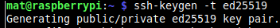2. After the public/private key pair is generated, it can then be copied to the NAS server.
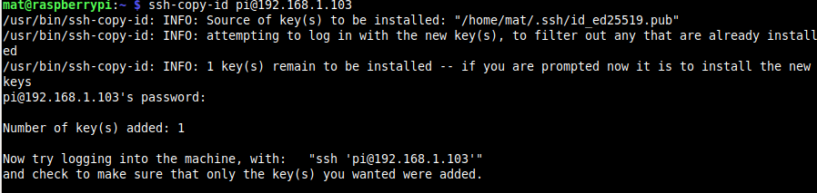3. After the ssh key file is copied over to the NAS server, it should automatically login upon initiating an ssh session..
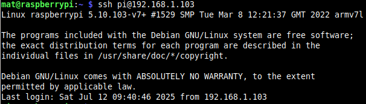4. To further confirm, run whoami. And, we're in!
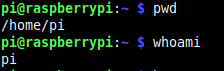5. Here, I'm going to give the pi user account that is referenced in the script access to the /mnt/nasdrive NAS server directory for the script to run without error.
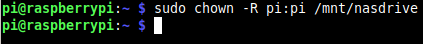6. From here, I'll launch nano to start creating the script.
Starting with the specified variables to ensuring that user account is checked for having write permissions to the directory.
The script then runs rsync with the first four variables and then redirects the results in the log file variable.
The script then finalizes with the print status in a conditional statement based on the backup being successful or failing.
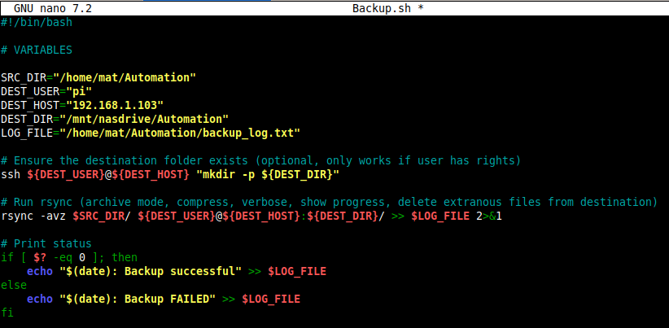7. Now that the script is written and saved, set the file to be executable.
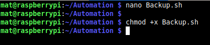8. Script is ready to run.
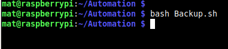9. On the Raspberry Pi 3 NAS server, the backup shows successful.
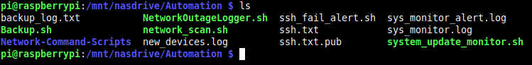10. The script is all ready to go. From here I'm going to set to run once per week as a cronjob.
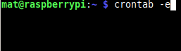 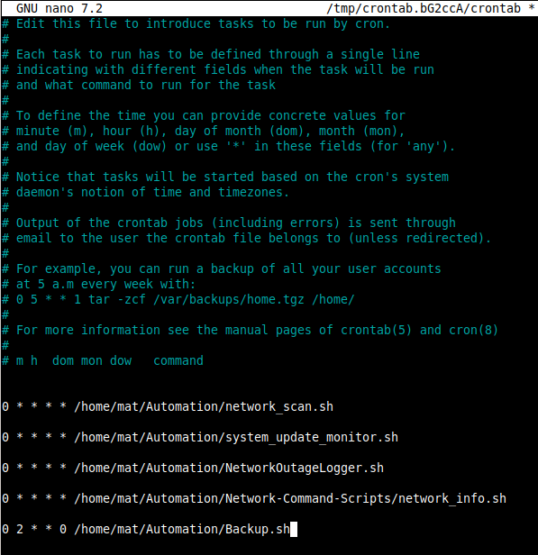